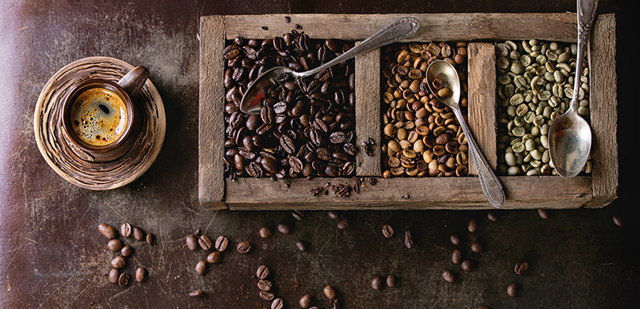

İçtiğimiz kahvenin Etiyopya’dan, Kosta Rika’dan ya da Endoneyza’dan geldiğini biliyor olsak da, bu hâliyle kahvenin aslında vişne ya da yaban mersinine benzeyen bir meyve olduğunu düşünmek zor. Fakat öyle! Demlediğimiz, öğüttüğümüz, içtiğimiz kahvelerin hepsi aslında coffea adlı kırmızı meyvenin çekirdeğinden elde ediliyor. Bu meyve, rubiacceae familyasına bağlı olan ve 7-8 m. boyunda bir bitkidir Çiçeklenmesi ve sonra tanelenmesi ise kahve meyvesini meydana getirir. Kahve türlerini “%100 Arabica Ne Demek?” yazısında; kahve meyvesi ve çekirdeğinin ayrılma işlemlerini ise “Kahvenin Yolculuğu” yazısında anlatmıştık. Kahve ağacı ve içeceği nasıl ortaya çıktı? Bir meyve olarak coffea’nın kimler tarafından ve nasıl keşfedildiğine dair kimi rivâyetler bulunamaktadır. Bu rivâyetler ise kahvenin kökeninin Etiyopya mı Yemen mi olduğu konusunda zıtlıklar hatta kimi zaman ateşli tartışmalar içermektedir. Kimilerine göre ise kahve bitki olarak Etiyopya’da ortaya çıkmış bile olsa, bir içecek olarak Yemen’de gelişmiş ve tüketilmiştir (Perfect Daily Grind, 20 Eylül 2017). Kurutulmuş kahve meyvelerinin antik çağlardan itibaren Etiypya’da çiğnenerek yendiği iddia edilmektedir (Purseglove, 1968). Mary Ellen Snodgrass (2004, s. 236) tarafından yazılan Mutfak Tarihi Ansiklopedisi [Encyclopedia of Kitchen History]’ne göre kahvenin 8. Yüzyılda Habeşistan’da yağ ve tuz ile yenildiği aktarılmaktadır. Afrika genelinde ise kahvenin yaprak, tohum, çiçek ve meyve gibi çeşitli kısımları bir gıda maddesi gibi tüketilmektedir. Frederic Wellman’a (1961) göre kahve İslam-öncesi bu dönemde Afrika’dan Arabistan’a bile tanıtılmıştır. O dönemde kahve, bugünün çikolata barlarını andıran bir şekilde sıkıştırılmış olarak tüketilmektedir. Kahve ağacının keşfedilişi hakkındaki en yaygın rivayetlerden biri 9. Yüzyılda yaşamış Etiyopyalı çoban Kaldi’ye aittir. Kaldi, sürüsündeki keçilerin yediği bazı otların, onları çok daha neşeli ve canlı hâle getirdiğini fark edince, bu enerji kaynağını keşfetmek ister ve kahve meyvelerine ulaşır. Keşfini yöredeki bir din adamına göstererek bu bitki hakkında bilgi almak ister. Fakat din adamı bu keşfin zararlı olduğunu düşünerek kahve tanelerini ateşe fırlatır. Yanan kahveden öyle güzel bir koku yayılır ki, çevrede bulunan tüm keşişler Kaldi’nin etrafına toplaşır ve bu güzel kokunun kaynağını öğrenmek ister. Keşişler kavrulmuş bu kahvenin tadına da bakarlar ve uzun ibadet gecelerinde bu yemiş sayesinde daha kolay uyanık kalabildiklerini fark ederler (Mythencyclopedia, 2007). Kaldi’nin hikâyesi ilk kez 1671 yılında Roma’da Doğu Dilleri alanında profesor olan Antoine Faustus Nairon tarafından kaleme alınır (Koehler, 2017, s. 98). Kahvenin kökenine dair diğer bir rivayet Yemenli şeyh Ebü’l-Hasan eş-Şâzelî (1197-1258)’ye dayanır. Bu rivayete göre, Şeyhü’l Hasan Şazeli, Etiyopya’da seyahat halindeyken, kuşların yediği kahve meyvesini görerek denemek ister. Bu meyvenin kişiye canlılık kazandırdığını fark eder (Goodwin, 24 Eylül 2019). İkinci bir rivayet ise Katip Çelebi’nin Cihannüma isimli eserinde geçer. Rivâyete göre Ömer isimli bir şeyh uzun yoldayken Şeyh’ül Hasan Şazali ile karşılaşır. Şeyhi, Ömer’e bir ağaçtan kopardığı yuvarlak bir topu hediye eder ve ayrılırlar. Ömer, kimi zamanlar uzun yolculuğunu sona erdirmek istese de; bazı duraklarda cebindeki bu top hareketlenir ve Ömer bunu bir uyarı olarak algılayarak bir sonraki durağa kadar yoluna devam eder. Ömer, sonunda Muha (Kızıldeniz’in batı sahili) beldesine yerleşme kararı alır. Şeyh Ömer, bu beldede padişahın kızı da dahil olmak üzere pek çok hastayı iyileştirir. Ancak halk, padişahın kızı ve Ömer arasında birtakım dedikodular çıkarınca Ömer padişah tarafından sürgün edilir. Sürgün edildiği bu kurak bölgede Ömer bir gün cebindeki top şeklindeki meyveyi bir çömlekte kaynatır ve içer. Rivayet bu ya, içtiği bu şey kahvedir. Bundan sonra Ömer civardaki ağaçlarda gördüğü, cebindeki topa benzer meyveleri kaynatıp içmeye, başka insanlara ikram etmeye, hatta bu içecekle uyuz hastalığını tedavi etmeye başlar. Ömer, bu hastalığı tedavi etmesi üzerine affedilir ve kendisine padişah tarafından da hürmet gösterilmeye başlanır (Toros, 1998, s.6; Gezgin, 2007, s.110-2). Peki hikayesi Etiyopya ve Yemen’den başlayan kahve nasıl başka ülkelere ulaşmıştır? Kahve ağacı farklı bölgelere nasıl taşınmıştır? O zamanın ulaşım koşulları, kahve fidelerini saklamanın imkansızlığı ve iklim koşulları kahve yetiştiriciliğinin yayılmasına nasıl imkân tanımıştır? Bu noktada Hindistanlı Sufi Baba Budan’ın hikâyesi devreye girer. Bu rivayete göre 1650li yıllarda kahve ticareti Arapların elinde sıkı bir denetime tabiidir ve kahve ihracı Mocha limanından yürümektedir. Bu dönemde kahve ancak kavrulmuş ya da kaynatılmış olarak, filizlenmesine olanak sağlanmayacak bir şekilde, Yemen dışına çıkabilmektedir. Hatta yabancıların kahve tarlalarına girmesine izin bile yoktur. Hac yolundan ülkesine geri dönen Baba Budan ise Yemen’de durakladığında, çok sıkı denetlenen bir kahve tarlasına girmeyi başarır. Buradan ayrılırken cübbesinin içine yedi adet yeşil kahve çekirdeği saklayan Baba Budan, bu tohumları Hindistan’ın dağlık bir bölgesi olan Chikmagalur’da yetiştirmeye başlar (Koehler, 2017, s. 140)